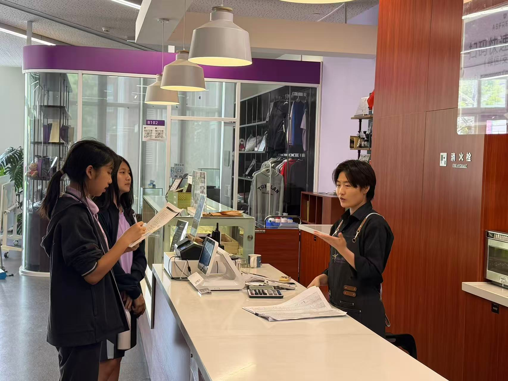
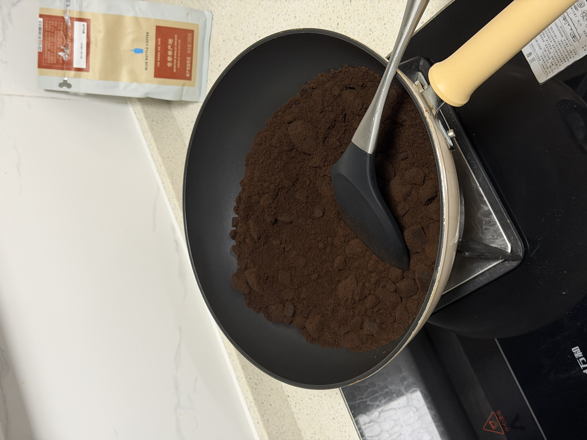
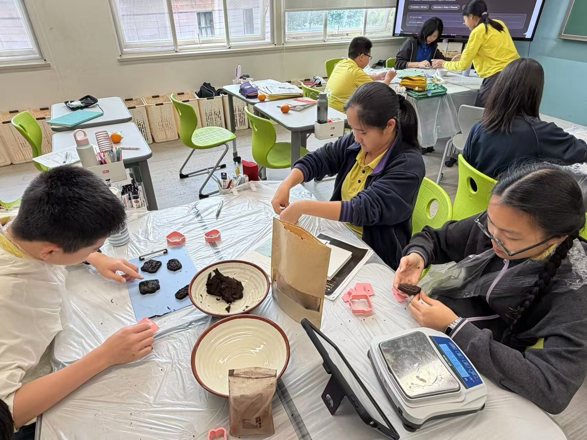
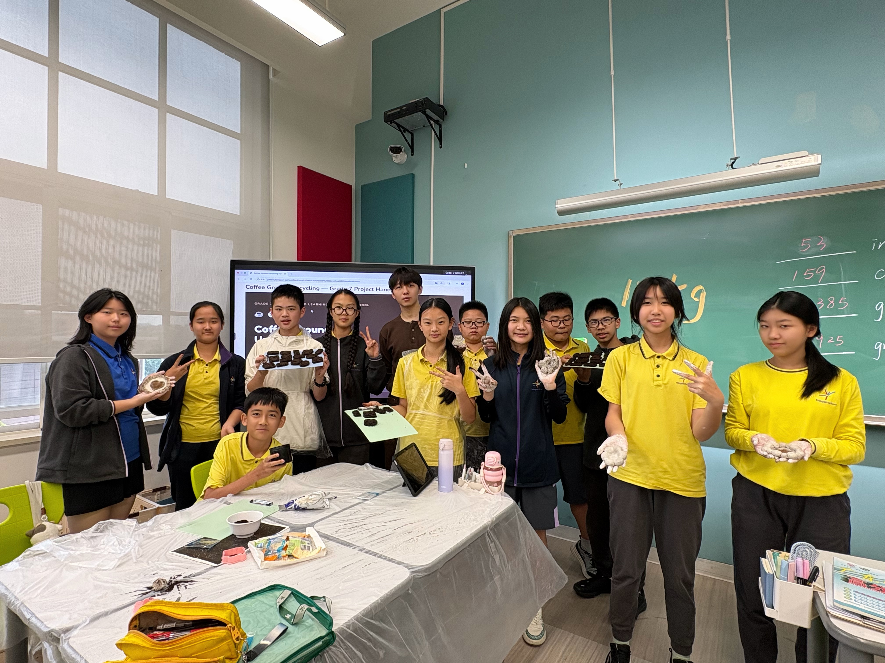
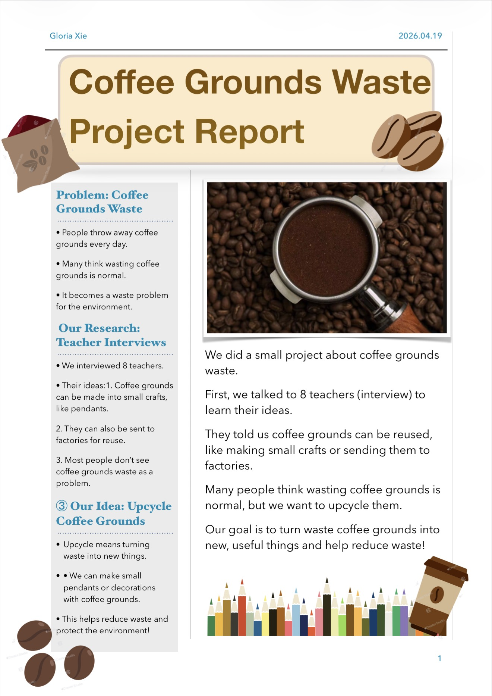

How four phases unfolded. 📸
From a cardboard box of wet grounds to a classroom of finished products — here's the arc.
From the café counter.
Students visited the school café every afternoon to collect the day's used coffee grounds. Some days it was half a kilo. Some days it was nearly two.

The patience phase.
We took the wet grounds home, spread them thin on trays, and dried them for two days. Wet grounds mould quickly — dry ones keep for weeks.

Hands-on crafting.
A three-hour session in the classroom: mixing, shaping, designing blessing characters, sculpting coasters. The whole room smelled like espresso.

Sharing what we learned.
Each group presented their interview data, their product, and the question they now wanted to keep exploring. Not a conclusion — a beginning.

Student posters


Student voices
Before this project, I thought recycling meant putting bottles in a blue bin. I never realised something like coffee grounds — something we see every single day — could become a candle that sits on my mum's desk.
The hardest part wasn't the making. It was the interview. I was so nervous talking to a teacher I didn't know. But when she said "I never thought twice about it" — I realised this project mattered.